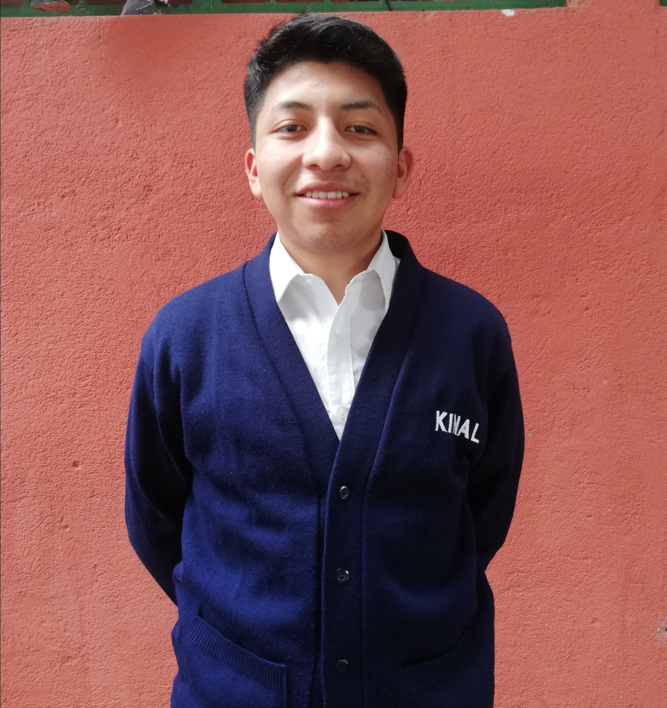

Mi nombre es Werner Obdulio Emmanuel Tuj Chacom, actualmente vivo en la Ciudad capital pero originalmente soy de Santa Clara La Laguna, Sololá, Guatemala. Nací en el año 2004 lo cuál mi edad es de 18 años, empecé como todo bebé normal, gateando y tratando de aprender mis primeros pasos, todo iba demasiado bien. Llego a la edad de 6 años y mis padres deciden meterme a la escuela para mi bien, mi primera experiencia fue en Párvulos, un nivel de educación para niños que empiezan, desde pequeño me costaba hacer las tareas, me dificultaba mucho estudiar, pero conforme fui creciendo y pasando nivel primario fui aprendiendo muchas cosas, pase mi ciclo primario de la mejor manera, después se decide por mis padres meterme al nivel básico, la cuál fue un instituto por cooperación por 2 años, vivi experecias que nunca antes había pasado, logré meterme a un campeonato de Fútbol lo cuál siempre fue mi sueño, no siempre fueron días buenos durante esa etapa, ya que como todo adolescente le suele dificultar varias cosas, por alguna razón el deporte fue una de las cosas que más amo ya que me distrae de la realizadad y aparte me ayuda a estar vivo, pude estar en la selección de mi instituto, después de esos años hubo una conversación con mis padres, había una oportunidad de estudio fuera del pueblo, era una decisión difícil creí que lo hacían solo para intimidarme y tratar de hacer que le eche más ganas a mis estudios, pero llegó el día en que se volvió realidad, ya tenía amigos con quienes pasaba mucho tiempo, los considero como hermanos y la verdad se me hacía difícil decirles ya que no quería que se molestaran conmigo por pensar que cambiaré por ir a otro lado, al final no les dije nada, nadie de mi familia habló por alguna razón, se trató de guardar para que no hable tanto la gente. Para el mismo año que fue mi último en el instituto (2019) hubo una excursión de parte del internado, para los que iban a entrar al programa que ellos organizan, tuve que ir ya que mis papeles ya estaban, tenía miedo de compartir con otros compañeros pero al final fui y tuve una experencia bastante agradable, conocí lugares que quizá nunca hubiera ido con mi familia, por la cantidad de dinero que lleva. En esa semana conocí un poco sobre el internado, en eso aún no estaba listo ya que jamás me había separado de mi familia de esa manera, llegó el día en venir y pues hubo ese momento conmovedor. 2020 llegué a la capital para poder terminar mi ciclo básico, encontré a nuevos compañeros y amigos, poco a poco fui conociendolos. Ese año me costó adaptarme ya que era algo totalmente nuevo pero sí o sí tenía que hacerlo. Pasaron unos meses y llega la pandamia, algo que nadie se esperaba y que pensabamos que jamás podría venir a nuestro país, al final todos tuvimos momentos difíciles ya que se planeaba qué hacer para poder seguir estudiando, unas semanas después los colegio empiezan con clases virtuales, muy nueva experencia y así fue el año, al final logré graduarme de mi ciclo básico. Tomo la decisión de escoger el la carrera y el colegio que pueda beneficiar, al final escojo a Kinal, había escuchado que era un excelente colegio y que podía conseguir varias oportunidades con ello, hago mi exámen de admisión y logro pasar, empezaba con otra etapa de mi vida llena de nuevas experecias, conocí a mis compañeros y poco a poco me fue gustando más la carrera de Informática, quizá no sea de los mejores pero doy mi mayor esfuerzo, se tornó difícil ciertos cursos pero pude pasarlos y obtener mi certificado de promovido, en vacaciones fui a mi casa con mi familia a descansar y pasarla bien, todo muy bonito, pasó 1 mes y medio, tocaba regresar para comenzar mi Quinto grado de nivel diversificado, ya sabía como era el colegio así que seguí haciendo mi mayor esfuerzo hasta ahora que estamos a finales del tercer bimestre y que casi acaba el ciclo escolar.
